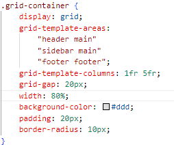

Header
Sidebar
Main Content
Pruebas:
Cambiar la distribución de las columnas: grid-template-columns:
1fr 3fr
;
Cambiar el espacio entre las columnas: grid-gap:
20px
;
Cambia la distribución de los elementos reordenando grid-template-areas
No puedes hacer cualquier cambio: en general, si hay cuatro elementos en el html, solo se pueden crear cuatro zonas.

Zona del archivo css que se debe cambiar para la prueba 3.